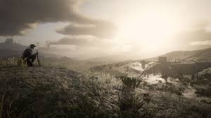

The game allows you to emperse yourself in the world of turn of the century America. You get to gallavant across the Wild plains and paries of the western United States, slog across the sweltering deserts of the South West, Discover mutilated miners deep in monstrous Appalachia.
2. I am a history Buff
I love history and there is no better way to engage in an accurate and detailed look at the past of America than to play Red Dead Redemption 2. I have fallen in love with Rockstar's depiction of the fall of the Wild West.
3. I Deleted 120 hours of Gameplay
I deleted my entire save file after finishing the epilouge of the Game. So I had to start a new save and have all of my work ripped away from me so the sunk cost fallacy and the mourning of what I lost kicked in. I had to get back what I had lost as fast as possible. Then and There I commited to finishing the game again instantly. I have never been the same since, its all I think, all I do, all I feel, all I see, all I know.